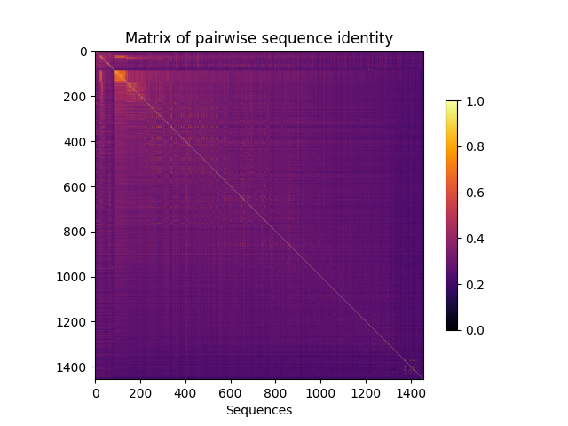

Note
Go to the end to download the full example code. or to run this example in your browser via Binder
Compute SCA coevolution matrix¶
A small example that shows how to load and filter an MSA, compute positional and joint amino acid frequencies and finally, compute the SCA coevolution matrix.
from cocoatree.msa import load_MSA, filter_gap_seq, filter_gap_pos, \
seq_weights
from cocoatree.statistics.position import aa_freq_at_pos, background_freq
from cocoatree.statistics.pairwise import aa_joint_freq, compute_sca_matrix, \
compute_seq_identity
from cocoatree.deconvolution import eigen_decomp, compute_ica
import matplotlib.pyplot as plt
seq_id, sequences = load_MSA("data/s1Ahalabi_1470.an", format="fasta")
Npos, Nseq = len(sequences[0]), len(sequences)
# Filter overly gapped positions
filt_seqs, pos_kept = filter_gap_pos(sequences, threshold=0.4)
# Filter overly gapped sequences
seq_id_kept, seq_kept = filter_gap_seq(seq_id, filt_seqs, threshold=0.2,
filtrefseq=False)
# Compute matrix of pairwise sequence identity
sim_matrix = compute_seq_identity(seq_kept)
# Compute sequence weights
weights, Neff = seq_weights(sim_matrix)
# compute allele frequencies
aa_freq = aa_freq_at_pos(seq_kept, lambda_coef=0.03, weights=weights)
# Compute background frequencies
qa = background_freq(aa_freq)
# Compute joint allele frequencies
fijab, fijab_ind = aa_joint_freq(seq_kept, weights=weights, lambda_coef=0.03)
# Compute the SCA coevolution matrix
Cijab_raw, Cij = compute_sca_matrix(joint_freqs=fijab,
joint_freqs_ind=fijab_ind,
aa_freq=aa_freq,
qa=qa)
# Decomposition of the matrix into principal components
eigenvalues, eigenvectors = eigen_decomp(Cij)
# Plot distribution of eigenvalues
plt.figure()
plt.hist(eigenvalues, bins=100, color="black")
plt.ylabel('Number')
plt.xlabel('Eigenvalue')
plt.show()
# Independent component analysis (ICA)
Vica, W = compute_ica(eigenvectors, kmax=6, learnrate=0.1, iterations=100000)
Total running time of the script: (0 minutes 3.305 seconds)